なるほど換気
①建築基準法について
|
「換気は法律によって決められている」といっても、普段何気なく「換気」 という言葉を耳にしただけでは、「本当っ？」という感じぐらいですね。 「窓や換気」は、「建築基準法」により定めれられています。 |
||
| 建築基準法では、以下の様に定義づけられています。 |
|
第28条の２ 居室には換気のための窓、その他の開口部を設け、その換気に有効な部分の面積は、その居室の床面積に対して、1/20以上としなければならない。 ただし、政令で定める技術基準に従って換気設備を設けた場合においては、この限りではない。 |
|
第28条の3 （左記は略します）に掲げる用途に供する特殊建築物の居室又は建築物の調理室、浴室その他の室でかまど、こんろその他火を使用する設備若しくは器具を設けたもの（政令で定めるものを除く。）には、政令で定める技術的基準に従って、換気設備を設けなければならない。 |
 |
簡単にまとめると |
|
第28条の2は
居室の換気に対応可能な窓の面積は、床面積の1/20以上でなければ、換気設備が必要になるということです。 |
|
第28条の3は 政令で定められた建築物の調理室等の火気使用設備や器具は、政令で定める技術基準に従って、換気設備設けなさいということです。 |
| 換気設備を設けなくても良い場合 |
| 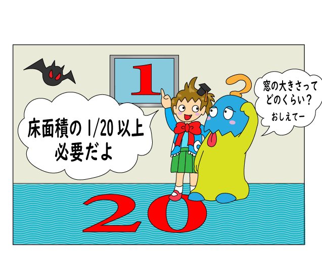 |
|
||||||||
②法律による換気量の基準
| 法律で定められた換気量は「法定換気量」ともよばれています。 この法定換気量のことを「有効換気量」と呼び衛生上有効な最低換気量として定められ、同時に「外気導入量」のことを指しています。 |
|||||||||||||||||||||||||||||||||||||||||||||||||||||||||||||
| 法定換気量は次の様になっています | |||||||||||||||||||||||||||||||||||||||||||||||||||||||||||||
| 法定換気量算出 【建令20の2-1-ロ・20の2-2】 V=20Aｆ/N V ：有効換気量（㎥/h） Af：居室の床面積（㎡） N ：１人当たりの専有面積（㎡） |
|||||||||||||||||||||||||||||||||||||||||||||||||||||||||||||
|
|||||||||||||||||||||||||||||||||||||||||||||||||||||||||||||
|
|||||||||||||||||||||||||||||||||||||||||||||||||||||||||||||
| 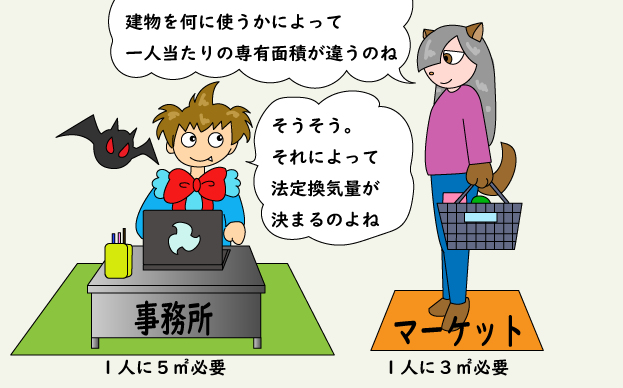
| |||||||||||||||||||||||||||||||||||||||||||||||||||||||||||||
③中央管理方式空調設備の環境基準（建築物衛生法の基準も含む※）
|
④機械換気の種類
| 第一種換気 換気効率が良い |
|
| 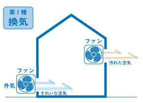 | 給気と排気にファン等の機械を用いることで、室内を均圧に保てる。 |
| 第二種換気 医療（クリーンルーム）など |
|
| 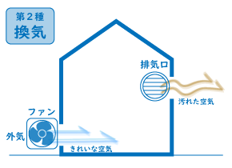 | 給気側の圧力を利用して、排気口から排出する。 |
| 第三種換気 一般に利用されている換気 |
|
| 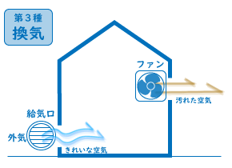 | 排気をファン等の機械で行い、ファン等の負圧作用により、給気口から外気が吸引される。 |
| このように、機械換気には第一種から第三種の３種類の換気方式があり、目的や用途に応じ換気方法を選択することで、適切な換気を行うことができます。 しかし、残念ながら目的や用途に沿わない選定をしてしまうと、色々と不具合が生じたりします。 換気は、外気（屋外の空気）を取り入れるものなので、夏の暑い季節や冬の寒い季節では、外気そのものが大きな熱（熱負荷）となって室内に入ることで、エアコン等の稼働に大きく影響を及ぼします。 又、屋外の空気を直接室内に取り込むと、当然ですが屋外のホコリ・粉じん・害虫なども簡単に入ってしまいます。フィルターを介することで、ホコリ等の捕獲ができ、 空気の清浄度が保たれます。 |
⑤火気を使用する換気の基準
| 1）V＝40kQ V ： 要求換気量（㎥/h） 2）V＝30kQ k ： 理論廃ガス量（㎥） 3）V＝20kQ Q ： 燃料消費量（㎥/h）又は、(kg/h） 4）V＝ 2kQ |
||||||||||||||||
火気を使用しない電化厨房については、法規制はありませんが、熱・水蒸気・臭気等の排出のための換気量として、ミニキッチンでは200㎥/h以上、一般家庭用の電化厨房器具では300㎥/h以上の換気が望ましいでしょう。 |
||||||||||||||||
| 1）V＝40kQ | |
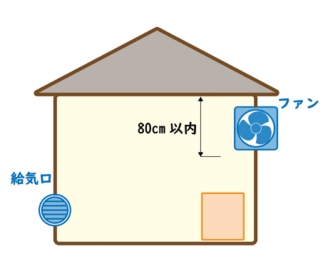 |
もっとも一般的な換気方法で、天井換気扇や壁掛け換気扇が、このV＝40kQの換気量にあたります。 ここで特に注意が必要なのは、天井下：80cm以内に換気扇等を設けなければならないと言う点です。 コンロに近いからと言って、天井下から80cm以上になっていると、イエローカードになります。 |
| 2）V＝30kQ | |
 |
排気フードⅠ型と言う、ややこしそうな排気フードが現れましたが、一般的なレンジフードや、排気フードと思ってもらえれば良いでしょう。 但し、コンロ台の上部からフードの下部迄の距離は、1.0M以内で、不燃材（鋼板等）で無ければ、イエローカードです。 この内容に沿っていれば、V＝30kQの換気量で満足出来ます。 |
| 3）V＝20kQ | |
| 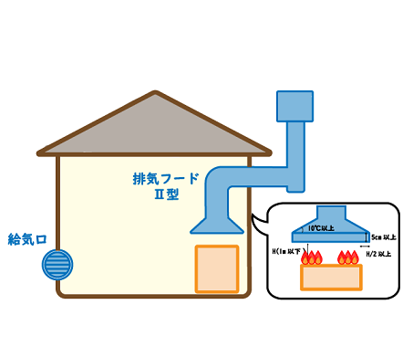 |
排気フードⅠ型と違って、制限を設けたフード（水平面に対して10°以上で、下部が5cm以上の垂下がり部を設けたもの）です。 コンロ面からフード下部迄の距離をH＝1.0M以内におさめ、フードの側面と火源の距離がH/2以上になるフードを、排気フードⅡ型と定義されたフード（勿論不燃材です）です。 これを用いた場合は、V＝20kQの換気量で満足出来ます。 然し、この定義に沿っていなければ、やはりイエローカードにあたり、V＝30kQを採用しなければなりません。 |
| 4）V＝ 2kQ | |
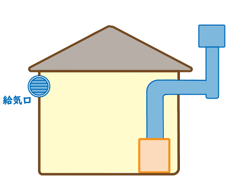 |
このケースは、最近では余り見掛けられない様ですが、給湯器などではこの換気量（V＝2kQ）が採用されます。 燃焼器具と換気扇等が煙道（ダクト等）を介して、直接接続が必要なければ、当然イエローカードです。 この場合の換気量はV=2kQになりますが、注意しなければならない点は、1）～4）の給気口から確実に換気量に等しい給気量が導入されなければなりません。 |
⑥シックハウス対策の換気の基準
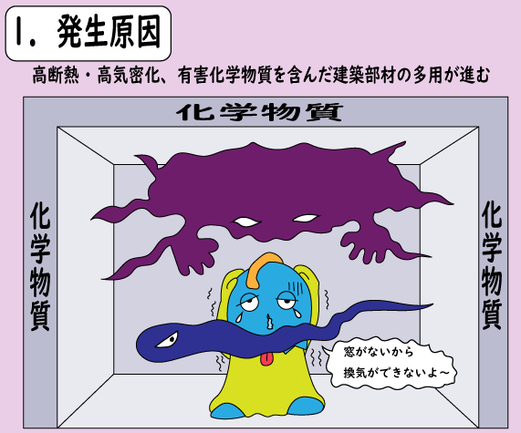 |
|
| シックハウス対策の背景には、住宅の高断熱・高気密化が進み、自然換気量が減少して、居室の換気量は必要最小限まで削減されました。 住居以外のオフィス等では、外気負荷（屋外の熱による損失）の軽減策として、エネルギー消費量を削減する目的で、換気量が削減されてきました。 その一方では、建築部材の耐久性を向上させることや、施工しやすいことと同時に、安価に製造できる等の利点により、ホルムアルデヒドや揮発性有機化合物など、様々な化学物質を含んだ建築部材が幅広く使用される様になりました。 |
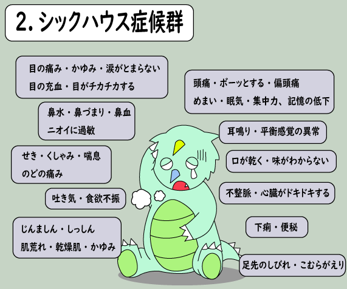 |
|
|
その結果、建材に使用された化学物質が居室に放散され、室内の空気質が汚染されるようになりました。 換気量の減少と、化学物質を使用した建材の増加が要因となり、居住者が高濃度の化学物質にさらされ、室内の空気汚染が原因となって、めまい・吐き気・頭痛・目・鼻・のどの痛みなどの症状を訴えると言った、健康被害が問題視され出しました。 海外では1980年頃から、シックビル症候群（SBS）として問題になっていましたが、日本ではおよそ16年も遅れ、1996年頃より、住宅を中心に「シックハウス症候群」として問題視されてきました。 |
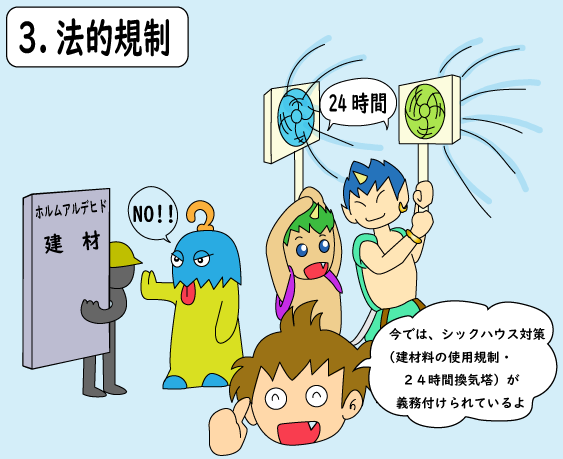 |
|
| 2003年7月1日に「改正建築基準法」が施工され、28条の第3項に「換気量の確保」と「クロルピリホスの使用禁止」や「ホルムアルデヒドを発散する建材の使用規制」といった、シックハウス対策が義務化されることとなりました。 |
| 4.シックハウス対策の換気量について | |
| シックハウス対策の換気量は、簡単には説明しづらいので、さらりと解説しておきます。 建材等のホルムアルデヒドを発散する内装仕上げ材の使用面積に応じて、換気回数（時間単位の空気の入れ替わり回数）が求められる様になっています。 住宅の居室は、換気回数0.5回/h以上の換気量を持つ換気設備を設置することが、建築基準法令で義務づけられています。 又住居以外の居室では、換気回数が0.7回/h以上の機械換気設備を設け、換気量が確保されている居室は、天井高さに応じて換気回数が定められています。 |
| 5.技術基準により算出する方法 | |
| ホルムアルデヒドを発散する建材を、使用しない場合に於いても、家具等からの発散が有り、換気設備についての、ホルムアルデヒドに関する法第28条の2第3号で、定められた技術基準により算出する方法としては、以下の様な計算方法です。 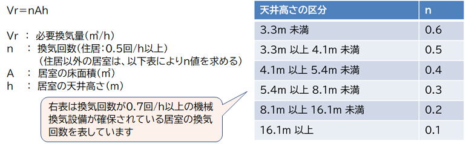 |
| 6.換気設備設置の義務付け（24時間換気） | |
| 原則としてすべての建築物に機械換気設備の設置が義務付けられています。 この目的は、ホルムアルデヒドの発散が、室内の内装仕上げだけではなく、居室内の家具や什器、生活用品等からも発散する恐れがあるためです。 その目的により、住宅等の居室では0.5回/h以上、その他の居室については0.3回/h以上の機械換気設備を設け、前述の換気回数を24時間連続的に稼働させる「24時間換気」が用いられています。 （建基法の規定換気回数は、天井高さ2.3mを想定して定められていますが、居室の天井高さに応じて必要換気量が異なり、更に機械換気設備の換気回数によっても天井髙さにより、必要換気量が異なります。） |